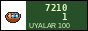

Привет! We are Kubik, the club of board games in Nurzhan. Every Saturday at 15:00 we meet in room 214 of building B of the Polytechnic (the porter knows us, say "to Kubik"). Free, everyone 14+ welcome. Bring tea and cookies.
We have 23 games, most of them brought from Almaty and Moscow in suitcases, some printed and glued by ourselves. The most popular: Munchkin, Carcassonne, Mafia (every time!), Settlers of Catan (in Russian, "Колонизаторы"), and our D&D campaign on Sundays.
02.2013 The Polytech gave our room to the new computer class. Meetings now at Denis's flat until we find a place. Write in the guestbook.
09.2012 Mafia tournament: 31 players! Winner Igor Lim (again), he never lies, so nobody believes him.
03.2011 New games from Almaty: Dixit and Ticket to Ride.
11.2009 The club is officially registered at the Polytech student council!
06.2009 First meeting: 6 people, one Munchkin.
